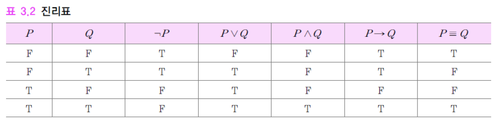

11th
Created: October 6, 2022 9:09 AM Last edited time: November 20, 2022 1:13 AM
명제 논리의 의미
진리표 (truth table)
논리기호에 따라 참, 거짓 값을 결합하는 방법을 나타낸 표

논리식의 해석 (interpretation)
논리식의 진리값을 결정하는 것
\[ P = T, Q = F, R = T \]
\[ (P~\lor~\neg{Q})~\land~(Q~\lor~\neg{R}) = F \]
우선 각 명제기호의 진리값 결정 필요
- 명제기호에 ’명제’를 대응시키고, 해당 명제의 진리값을 결정
- ex) p → ‘토마토는 과일이다’, P = F
- 대응된 명제를 명제기호의 외연 또는 의미(denotation)라 함
논리식의 모델 (model)
논리식의 명제기호에 참값(T) 또는 거짓값(F)를 할당한 것
\[ (P~\lor~\neg{Q})~\land~(Q~\lor~\neg{R}) = F \]
\[ P = T, Q = F, R = T \]
모델이 주어지면, 진리표를 사용하여 논리식의 진리값 결정, 즉 해석 가능

n개의 명제기호가 논리식에 사용된다면, 각각 T 또는 F값을 가질 수 있기 때문에 총 \(2^{n}\)개의 모델이 존재
타당한 논리식 (valid logical expression)
모든 가능한 모델에 대해서 항상 참(T)인 논리식
항진식 (tautology)
\[ P~\lor~\neg{P} \]
\[ P = T: P~\lor~\neg{P} = T \]
\[ P = F: P~\lor~\neg{P} = T \]
항위식 (contradiction)
모든 가능한 모델에 대해서 항상 거짓이 되는 논리식
\[ P~\land~\neg{P} \]
\[ P = T: P~\land~\neg{P} = T \]
\[ P = F: P~\land~\neg{P} = T \]
충족가능한(satisfiable) 논리식
참으로 만들 수 있는 모델이 하나라도 있는 논리식
\[ (P~\lor~\neg{Q})~\land~(Q~\lor~\neg{R}) \]
\[ P = T, Q = T, R = F \]
충족불가능한(unsatisfiable) 논리식
참으로 만들 수 있는 모델이 전혀 없는 논리식
항위식인 논리식
\[ P~\land~\neg{P} \]
동치관계(equivalence relation)의 논리식
어떠한 모델에 대해서도 같은 값을 갖는 두 논리식

동치관계를 이용한 논리식의 변환
- 논리식의 동치관계를 이용하면 임의의 논리식을 논리곱 정규형(CNF)과 같은 정형식으로 변환

논리적 귀결(logical entailment)
\(\Delta\): 정형식(wff)의 집합, \(\Delta = \{P, P \to Q\}\)
\(\omega\): 정형식, \(\omega = Q\)
\(\Delta\)에 있는 모든 정형식을 참(T)으로 만드는 모델이, \(\omega\)를 참(T)으로 만든다.
- = \(\Delta\)는 \(\omega\)를 논리적으로 귀결한다 (logically entail)
- = \(\omega\)는 \(\Delta\)를 논리적으로 귀결한다 (logically follow)
- = \(\omega\)는 \(\Delta\)의 논리적 결론(logical consequence)이다.
- \(\Delta\)가 참이면, \(\omega\)도 참이다.
명제 논리의 추론
추론 (inference)
참으로 알려진 \(\Delta\)로 부터, 알려지지 않은 참인 \(\omega\)를 찾는 것
귀납적 추론 (inductive inference)
관측된 복수의 사실들을 일반화(generalization)하여 일반적인 패턴 또는 명제를 도출하는 것
연역적 추론 (deductive inference)
참인 사실들 또는 명제들로 부터 새로운 참인 사실 또는 명제를 도출하는 것
논리에서의 추론
함의(→)의 논리적 관계를 이용하여 새로운 논리식을 유도해 내는 것
함의 p → q
- p: 전제 (premise)
- q: 결론 (conclusion, consequence)
추론규칙 (inference rule)
참인 논리식들이 논리적으로 귀결하는 새로운 논리식을 만들어내는 기계적으로 적용되는 규칙
긍정논법 (modus ponens)

부정논법 (modus tollens)

삼단논법 (syllogism)

논리융합 (resolution)
일반화된 추론규칙
- 긍정논법, 부정논법, 삼단논법의 규칙을 포함한 추론 규칙
두 개의 논리합절이 같은 기호의 긍정과 부정의 리터럴을 서로 포함하고 있을 때, 해당 리터럴들을 제외한 나머지 리터럴들의 논리합절을 만들어 내는 것
논리융합식 (resolvent):
\[ P \lor q, \neg{P} \lor r \vdash q \lor r \]